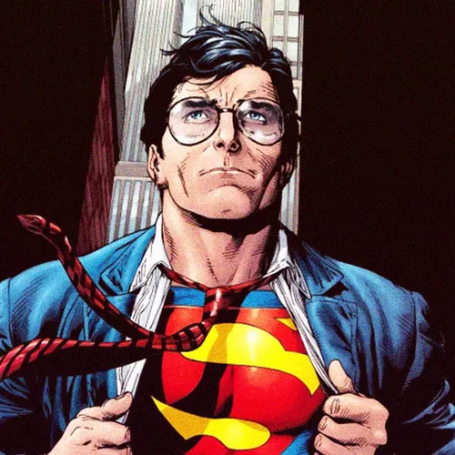

Nombre de nacimiento: Kal-El
Alias: El Hombre de Acero / El Último Hijo de Krypton
Base de operaciones: Metrópolis / La Fortaleza de la Soledad
Afiliación: Liga de la Justicia, El Daily Planet
Nacido en el condenado planeta Krypton bajo el nombre de Kal-El, fue enviado a la Tierra por sus padres biológicos, Jor-El y Lara, momentos antes de la destrucción de su mundo natal. Su nave aterrizó en el pueblo rural de Smallville, Kansas, donde fue adoptado y criado por los agricultores Jonathan y Martha Kent como Clark Kent.
Al crecer bajo el sol amarillo de la Tierra, Clark desarrolló habilidades sobrehumanas extraordinarias, incluyendo fuerza descomunal, invulnerabilidad, vuelo, visión de rayos X y visión térmica. Inculcado con un fuerte sentido de la moralidad y la justicia por sus padres adoptivos, decidió utilizar sus dones para proteger a la humanidad como Superman, mientras mantiene una identidad secreta como reportero del periódico Daily Planet en Metrópolis.